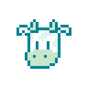

I'm a Seattle native and it shows: most of my favorite things coming out of high school center on Seattle culture and the mountains surrounding the city. On free days I love exploring my surroundings through hiking, climbing, and skiing. When it rains, as it often does, I'm happy to spend time on puzzles and board games, and this has translated well to my passion for computer programming.
I started coding in middle school and grew to love it through bigger projects my junior and senior years. Now I'm off at Williams College in Massachusetts studying Computer Science. My favorite class so far explored some of the many languages and circuits that compose computer architecture. I'm excited to now be conducting undergraduate research on some of those same topics.